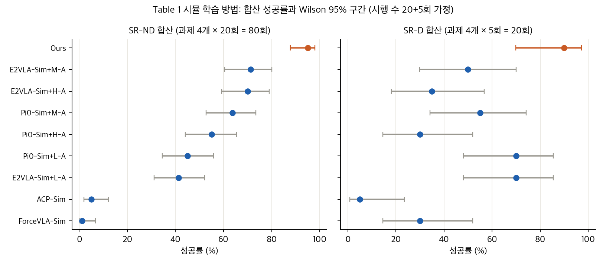
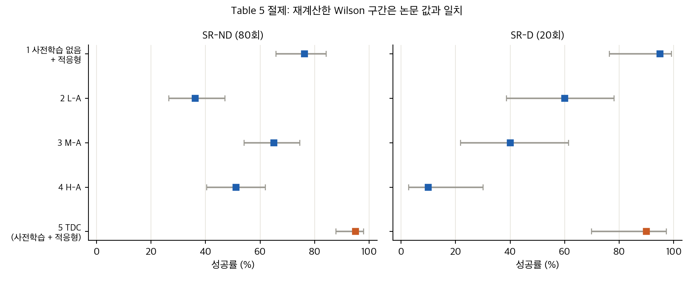
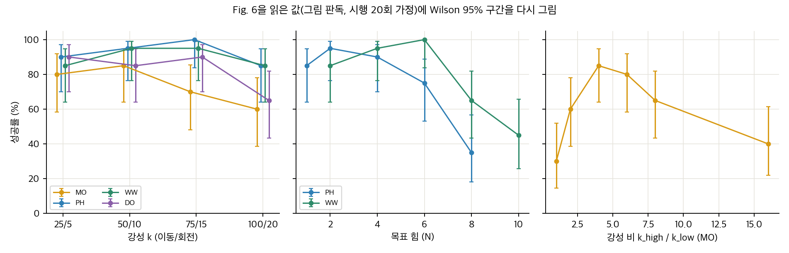
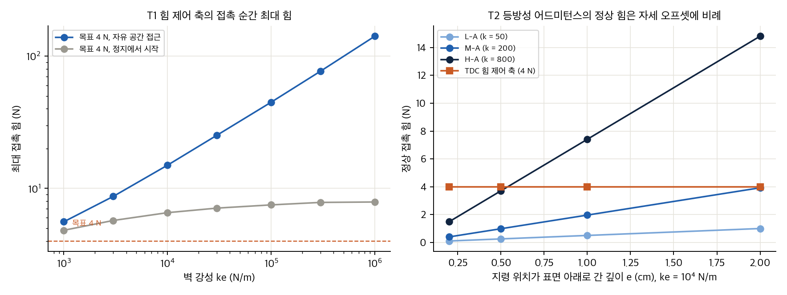

01 §0, V12).04 §4).TDC: Sim-to-Real Transferable Directional Compliance for Contact-Rich Manipulation — Yifei Yang, Anzhe Chen, Zhenjie Zhu, Kechun Xu, Yunxuan Mao, Yufei Wei, Lu Chen, Rong Xiong, Yue Wang (Zhejiang University, Zhejiang Humanoid Robot Innovation Center). CoRL 2026. 분석 대상은 arXiv v2 (2026-10-05) 이고, 인용은 paper/paper.txt(v2)의 절·식·표 번호를 씁니다. 분석일 2026-11-24.
| 항목 | 내용 |
|---|---|
| 학회 | CoRL 2026 포스터. arXiv comments "Accepted by CoRL 2026", 프로젝트 페이지 "CoRL 2026", v2 첫 쪽 "10th Conference on Robot Learning (CoRL 2026), Austin TX". 공식 채택 목록(저장소의 conferences/corl2026/papers.json)에서 poster, 세션 "Poster post-p3", 2026-11-11 10:30–12:00, 포스터 번호 143으로 확인했습니다 |
| 프로젝트 페이지 | https://yifei-y.github.io/project-pages/TDC/ (영상과 BibTeX. 코드 링크 없음) |
| 코드 | 공개된 저장소를 찾지 못했습니다(02 §2) |
| arXiv 라이선스 | abs 페이지 "view license"가 arxiv.org/licenses/nonexclusive-distrib/1.0/(arXiv 비독점 배포)를 가리킵니다. CC BY가 아닙니다 |
| 버전 | v1 2026-02-15 (4,418 KB, 13쪽), v2 2026-10-05 (6,696 KB, 16쪽) |
v1과 v2는 같은 실험 틀을 쓰지만 서술과 방법이 크게 다릅니다. v1 제목은 Direction Matters: Learning Force Direction Enables Sim-to-Real Contact-Rich Manipulation 이고 프로젝트 페이지 주소도 .../DirectionMatters/ 였습니다.
| 항목 | v1 (2026-02-15) | v2 (2026-10-05) |
|---|---|---|
| 정책 출력 | 포즈 + 법선 힘 방향 n(3차원) + 접촉 상태 c ∈ {0, 1} | 포즈 + 과제 프레임 방향 T(6차원) + 제어 모드 벡터 C ∈ {0, 1, 4}⁶ (3.3절) |
| 제어기 | 이동 축만 어드미턴스, 법선 힘 조절 + 접선 강성 ×4(식 3–5), 회전은 저강성·토크 0 | 6축 과제 프레임 어드미턴스, 축마다 힘 / 저강성 / 고강성(식 2, 3) |
| 이론 | 명제 1–3(법선 동역학 안정성, 부록 G에 증명) | 삭제 |
| 손실 | L1 세 항, 가중치 λ1–3 값 미기재 | 다섯 항, 가중치 (30, 30, 10, 30, 30) (식 1) |
| 기준선 | π0, E2VLA × {L, M, H}-A (6개) | + ForceVLA, ACP, 실데이터 학습 4개, 시뮬 힘 인식 2개 (Table 1, 4) |
| 평가 시행 | 과제·방법당 25회(교란 없음 20 + 교란 5) | 20 + 5로 같음. 서술이 "20회 + 교란 5회"로 바뀜 |
| 절제 | 화이트보드 한 과제 7줄(표 IV) | 네 과제 합산 5줄(Table 5), 실패 유형(Fig. 5), 민감도(Fig. 6) |
| 한계 서술 | 토크 미지원, 포즈 정확도 저하 | 다섯 가지(6절) |
| 동시 연구 | 언급 없음 | Force Policy [34]와 비교(2.1절) |
세부 수치 차이(Ours 행의 모든 과제 칸 변경 등)는 03 §6에 있습니다.
접촉이 많은 조작에서는 움직임뿐 아니라 힘도 조절해야 합니다. 실세계 학습은 비싸고 위험하며, 시뮬레이션은 접촉 동역학 차이(sim-to-real gap) 때문에 힘 조절이 전이되지 않습니다(1절). 기존 대안은 (a) 실세계 적응·시스템 식별, (b) 동역학 무작위화 강화학습(상태 기반 정책에 머묾), (c) 위치만 내는 정책 + 수동 등방성 컴플라이언스 제어기입니다.
핵심 주장(1절): 힘 조절을 방향 성분과 크기 성분으로 나눕니다.
방향 성분을 정책 출력 두 개(과제 프레임 방향, 제어 모드 벡터)로 만들고, 사전학습된 VLA(E2VLA [22])를 시뮬 시연으로 모방학습한 뒤, 배치 시 사람이 지정한 크기 값과 함께 어드미턴스 제어기에 넣습니다.
2.1 과제 프레임 (3.1절). Task Frame Formalism [38]을 두 가지로 바꿉니다. (1) 힘 / 고강성 위치 / 저강성 위치의 세 모드(0, 4, 1로 인코딩. 값 4는 고강성 = 4 × 저강성의 비율에서 온 표기로 보입니다). 힘 목표가 0인 구속 방향도 저강성 모드로 둡니다. (2) 프레임 원점을 엔드이펙터에 고정해 방향만 예측합니다. 화이트보드 닦기의 예는 C = [4, 4, 0, 1, 1, 4]⊤ (x, y, z, rx, ry, rz 순)입니다. Fig. 3에 네 과제의 정답 프레임과 C가 나옵니다(MO [1,1,4,1,1,1], PH [1,1,0,1,1,1], WW [4,4,0,1,1,4], DO 손잡이 [1,1,4,1,1,1]과 문 열기 [4,1,4,1,1,1]).
2.2 시뮬레이션 전문가(3.2절). 특권 상태를 쓰는 규칙 기반 전문가가 자유 운동(키 포즈 사이 궤적)과 접촉 상호작용(PH는 구멍 축 하강, WW는 지그재그, 문·전자레인지는 로드리게스 공식의 원호)을 나눠 만듭니다. 자유 운동 단계의 프레임은 월드와 같고 C = [1,1,1,1,1,1]입니다. 성공한 에피소드만 쓰고, 시각 무작위화(HDR 배경 27장, 조명, 카메라 내·외부 파라미터, 부록 A)만 합니다. 동역학 무작위화는 하지 않습니다(정책 입출력이 동역학에 불변이라는 입장). 실물은 3D 스캔해 시뮬에 넣습니다.
2.3 시각운동 정책(3.3절). 관측은 RGB(손목 1 + 고정 1–2), 고유수용 10차원(위치 3 + 6D 회전 6 + 그리퍼 1), 언어 지시입니다. 행동은 h개 청크이고 각 스텝이 X^d ∈ R¹⁰(포즈 + 그리퍼), T^d ∈ R⁶(과제 프레임 방향), C^d ∈ R⁶(제어 모드 벡터)입니다. E2VLA의 확산 행동 전문가의 입출력 투영층을 늘리고, 새 가중치는 작은 크기로 초기화하며 기존 가중치는 사전학습에서 가져옵니다. 손실은
L = λ1‖X_pos − X̂_pos‖ + λ2‖X_rot − X̂_rot‖ + λ3‖X_grip − X̂_grip‖ + λ4‖T − T̂‖ + λ5‖C − Ĉ‖, (λ1..λ5) = (30, 30, 10, 30, 30) (식 1)
입니다(노름 종류는 v2에 없고 v1은 L1). 학습은 RTX 4090 한 장에서 약 10시간, 시연은 과제당 2,000개를 RTX 4090 한 장으로 약 6시간 만에 생성합니다(4.1절, 부록 C). 행동 청크는 E2VLA와 TDC가 32, 해상도는 240 × 320입니다(부록 C).
2.4 어드미턴스 제어기(3.4절). 식 2: M p̈_r + D ṗ_r + K(p_r − p_cmd) = F_ext − F_cmd. M은 이동 1, 회전 0.1. 강성은 과제 프레임에서 대각이며 모드 0이면 0, 모드 1이면 k_low, 모드 4이면 k_high. 감쇠 D = 2ξ√(M K)에서 ξ = 2(과감쇠)이고, 힘 제어 축은 강성이 0이므로 감쇠를 2ξ√(m k_low)로 둡니다. 월드 프레임 행렬은 K = S K̃ S⊤. 지령 힘은 힘 제어 축에서만 사람이 지정한 목표 힘 F_h입니다(식 3). 기본 설정은 k_high = 4 k_low이고 k_low = 50(이동) / 10(회전), 즉 k = 50/10. 목표 힘은 PH 2 N, WW 4 N(과제 프레임 z), MO와 DO는 없습니다(4.1절).
3.1 설정(4.1절). Franka 팔 + Franka Hand, RealSense D435 두 대(WW는 세 대), 관절 토크와 동역학 모델로 외력 추정, 서버 RTX 4090. 과제: 전자레인지 열기(MO), 페그 삽입(PH, 클리어런스 1 mm, 삽입 깊이 25 mm), 화이트보드 닦기(WW), 문 열기(DO). 방법·과제마다 20회 롤아웃(교란 없음, SR-ND)과 접촉 상태에서 시작하는 교란 5회(SR-D). 성공은 시간 제한 안에 안전 정지 없이 완료(부록 E: MO 문 50° 이상 120초, PH 10 mm 이상 삽입 60초, WW 남은 잉크 5 cm 미만 120초, DO 30° 이상 120초). 실데이터 기준선은 PH와 WW에서 Touch 원격조작으로 과제당 100개(약 8 인시간), MO와 DO는 힘 피드백이 불편해 안전 정지가 잦아 수집하지 못했습니다.
3.2 기준선(Table 4). π0, E2VLA, ForceVLA, ACP를 실데이터("-Real") 또는 시뮬 데이터("-Sim")로 학습하고, π0과 E2VLA는 저·중·고강성 어드미턴스 L/M/H-A(이동 강성 50/200/800, 회전 10)를 붙입니다. ForceVLA와 ACP는 자체 제어기(원격조작 임피던스, ACP 임피던스)입니다.
3.3 주요 결과(Table 1). 합산(Overall) SR-ND 95%, SR-D 90%입니다. 가장 높은 기준선 대비 +24, +20 %p라고 서술합니다(4.2절). 과제별 Ours는 MO 95/80, PH 90/100, WW 100/100, DO 95/80(SR-ND/SR-D, %). 가장 높은 시뮬 학습 기준선은 E2VLA-Sim+M-A(SR-ND 71, SR-D 50)입니다. ForceVLA-Sim과 ACP-Sim은 SR-ND 1%, 5%로 낮고, 저자는 이를 접촉 동역학 격차의 증거로 해석합니다(Q2).
3.4 완료 품질(Table 2). PH 삽입 깊이 25.0 mm(전 깊이), WW 남은 잉크 0.3 cm로 가장 좋습니다. 성공 시행 평균이므로 기준선마다 평균에 들어간 시행 수가 다릅니다.
3.5 절제(Table 5). 네 과제를 합친 SR-ND(80회)와 SR-D(20회)와 Wilson 95% 구간입니다. 사전학습 없음 + 적응형(No.1) 76.25 / 95.00, 사전학습 + L/M/H-A(No.2–4) 36.25 / 60.00, 65.00 / 40.00, 51.25 / 10.00, 사전학습 + 적응형(No.5, TDC) 95.00 / 90.00. 저자는 (i) 사전학습이 76 → 95를 만들고, (ii) 사전학습이 없어도 No.1이 No.2–4보다 낫다고 해석합니다.
3.6 실패 유형(Fig. 5, 부록 E). 불충분한 힘 / 과도한 힘(안전 정지) / 기타로 분류합니다. TDC의 실패는 100회 중 6회로, 과도한 힘 4회(과제 프레임이 가끔 어긋난 경우)와 기타 2회(포즈 예측 오류)입니다.
3.7 민감도(Fig. 6). 강성 k, 목표 힘, 강성 비 k_high/k_low를 바꿉니다. 한 점은 교란 없음 10 + 교란 10회로 20회이고 Wilson 구간이 붙어 있습니다. 저자는 "넓은 범위에서 낮은 민감도, 극단값에서 하락"으로 요약합니다. MO에서 비율 1은 30%, 4는 85%, 16은 40%(본문 수치).
3.8 정성 분석(부록 F, Fig. 4, 8). WW에서 z축 힘이 목표 4 N으로 수렴하고, 보드 높이·기울기 교란에 프레임이 따라 돕니다. PH에서는 구멍이 축 대칭이라 과제 프레임의 z축 둘레 회전이 불연속으로 튄다고 적습니다.
저자가 쓰지 않았지만 읽을 때 구분할 점(근거는 03, 04):
03 §6).V = 수치 재계산, K = 내부 일관성, C = 주장, D = 공개 코드와 논문 비교(코드 없음, 04에서는 E2VLA 공개 저장소만 일부 대조). 이 폴더의 공개본에서도 같은 표기를 씁니다.
논문 v2의 Table 1, 2, 5와 Fig. 5, 6의 값을 시행 수로 되돌려 다시 계산했습니다(analysis/recompute.py, 결과 analysis/recompute_results.json, 수 초). 원자료(시행별 기록)는 없으므로 아래 시행 수는 논문 4.1절의 "과제·방법당 20회(SR-ND) + 교란 5회(SR-D)"를 가정한 것입니다. 이 가정은 Table 5 캡션의 "80회, 20회"와 맞습니다. **Fig. 5와 Fig. 6의 값은 그림에서 읽은 값(그림 판독)**이고 판독 오차는 약 ±3 %p입니다. Fig. 6은 한 점이 20회이므로 5 %p 격자에 맞췄습니다. 검정은 Fisher 정확검정(양측)과 Wilson 95% 구간이며, 시행 수가 20회와 5회라 대부분의 칸 단위 검정은 힘이 약합니다. 표기: V = 수치 재계산, K = 내부 일관성, T = toy. 모든 코드는 numpy와 scipy만 씁니다.
V1. Overall 열. 가용 과제 평균을 다시 계산하면 13개 방법 모두 논문 값과 일치합니다(반올림, 예: ForceVLA-Sim SR-ND 1.25 → 1, ACP-Real 52.5 → 53). 단, 실데이터 기준선 네 줄의 Overall은 PH와 WW 두 과제 평균이고 시뮬 기준선은 네 과제 평균입니다("-"는 제외). 두 종류를 같은 열에서 순위 비교하면 과제 구성이 다릅니다.
V2. 정수 조건. SR-ND는 n = 20이므로 5의 배수, SR-D는 n = 5이므로 20의 배수여야 합니다. 44개 칸 × 2 = 88개 값 모두 만족합니다.
V5. 헤드라인과 합산 검정. 가장 높은 기준선 대비 +24 %p(SR-ND, E2VLA-Sim+M-A 71)와 +20 %p(SR-D, Pi0-Sim+L-A와 E2VLA-Sim+L-A 70)는 그대로 재계산됩니다. 시뮬 학습 기준선과 합산 시행(SR-ND 80회, SR-D 20회)으로 비교하면 다음과 같습니다.
| 기준선 | SR-ND 성공/80 | p (Ours 76/80) | SR-D 성공/20 | p (Ours 18/20) |
|---|---|---|---|---|
| E2VLA-Sim+M-A (최고 SR-ND) | 57 | 8.4×10⁻⁵ | 10 | 0.014 |
| E2VLA-Sim+H-A | 56 | 4.2×10⁻⁵ | 7 | 7.7×10⁻⁴ |
| Pi0-Sim+M-A | 51 | 1.0×10⁻⁶ | 11 | 0.031 |
| E2VLA-Sim+L-A (최고 SR-D 공동) | 33 | 5.0×10⁻¹⁴ | 14 | 0.24 |
| Pi0-Sim+L-A (최고 SR-D 공동) | 36 | 1.2×10⁻¹² | 14 | 0.24 |
SR-D가 가장 높은 두 기준선(L-A, 70%)과는 SR-D 차이가 구분되지 않습니다(18/20 대 14/20, p = 0.24). 합산 효과는 SR-ND에서 확실하고, 교란 조건은 20회뿐이라 L-A 대비 우위는 이 데이터로 단정하기 어렵습니다.
V6. 과제별. 과제마다 가장 높은 기준선과 비교합니다(SR-ND, 20회 대 20회).
| 과제 | 가장 높은 기준선 | 기준선 | Ours | p | Holm |
|---|---|---|---|---|---|
| MO | E2VLA-Sim+M-A | 18/20 | 19/20 | 1.0 | 1.0 |
| PH | E2VLA-Sim+H-A | 14/20 | 18/20 | 0.24 | 0.94 |
| WW | ForceVLA-Real | 20/20 | 20/20 | 1.0 | 1.0 |
| DO | Pi0-Sim+M-A | 18/20 | 19/20 | 1.0 | 1.0 |
같은 정책(E2VLA)에 등방성 어드미턴스 M-A를 붙인 비교로 좁히면 과제 차이가 보입니다: MO 19 대 18 (p = 1.0), PH 18 대 11 (p = 0.031), WW 20 대 11 (p = 0.001, Holm 0.004), DO 19 대 17 (p = 0.61). 4개 과제 Holm 보정에서 WW만 남고, PH는 0.09입니다. 95% 대 85%(과제 한 칸 수준)를 80% 검정력으로 구분하려면 한 쪽에 약 140회가 필요합니다(V14).
V11. 교란이 더 높은 칸. 44개 칸 중 SR-D가 SR-ND보다 높은 칸이 18개, 낮은 칸이 21개, 같은 칸이 5개입니다. 저자는 4.2절에서 교란 시행이 접촉 상태에서 시작하는 평가 방식 때문이라고 설명합니다. Ours는 PH(90 → 100) 한 칸만 높습니다.

Table 1 시뮬 학습 방법의 합산 성공률과 Wilson 95% 구간(시행 수 20 + 5회 가정).
V3. Table 1에서 시뮬 학습 6개 방법의 실패 횟수(100 − 성공 수)를 계산하면 Fig. 5 막대 위의 숫자와 모두 일치합니다: Pi0-Sim+L-A 50, M-A 38, H-A 50, E2VLA-Sim+L-A 53, M-A 33, H-A 37, Ours 6. 본문 "TDC가 100회 중 6회 실패"도 SR-ND 4회(76/80) + SR-D 2회(18/20)로 맞습니다.
V4. 막대 안 비율(%)이 정수 개수와 맞는 해가 방법마다 하나씩 있습니다. 읽은 비율에서 복원한 (불충분 / 과도 / 기타) 횟수는 아래와 같습니다. Pi0-Sim+L-A의 과도 칸과 Ours의 불충분 칸은 그림에 비율이 없어 나머지에서 복원했습니다.
| 방법 | 실패 | 불충분 | 과도(안전 정지) | 기타 |
|---|---|---|---|---|
| Pi0-Sim+L-A | 50 | 32 | 1 | 17 |
| Pi0-Sim+M-A | 38 | 12 | 14 | 12 |
| Pi0-Sim+H-A | 50 | 15 | 24 | 11 |
| E2VLA-Sim+L-A | 53 | 40 | 3 | 10 |
| E2VLA-Sim+M-A | 33 | 14 | 12 | 7 |
| E2VLA-Sim+H-A | 37 | 6 | 25 | 6 |
| Ours | 6 | 0 | 4 | 2 |
읽을 점. TDC의 실패 6회는 과도한 힘 4회, 기타 2회로 불충분한 힘이 0회입니다. 한편 과도한 힘 실패 4회는 L-A 기준선(1회, 3회)보다 많고 M-A(14, 12)와 H-A(24, 25)보다 적습니다. 즉 "힘 관련 실패를 크게 줄인다"는 L-A 기준선의 불충분한 힘 실패(32, 40)를 없앤 효과가 큽니다. 안전 정지 임계값은 v2에 적혀 있지 않아(K9) 과도한 힘 실패 횟수가 임계값에 어떻게 의존하는지는 알 수 없습니다.

Table 5 다섯 줄의 SR-ND와 SR-D (재계산 Wilson 구간은 논문 값과 일치).
V7. 80회·20회에서 복원한 성공 횟수는 No.1 61/80, 19/20; No.2 29/80, 12/20; No.3 52/80, 8/20; No.4 41/80, 2/20; No.5 76/80, 18/20이고 모두 정수입니다. 재계산한 Wilson 95% 구간이 논문 값 10개와 소수 둘째 자리까지 일치합니다(예: No.1 SR-ND [65.86, 84.24], No.5 SR-D [69.90, 97.21]).
V7b. TDC(No.5) 대비. SR-ND: No.1 p = 0.0012, No.2 5×10⁻¹⁶, No.3 2.2×10⁻⁶, No.4 1.8×10⁻¹⁰. SR-D(20회): No.1 p = 1.0, No.2 0.065, No.3 0.0022, No.4 5.3×10⁻⁷. 사전학습의 효과는 SR-ND에서 확실하고(61 → 76/80) 교란 조건에서는 구분되지 않습니다(19/20 대 18/20). 또한 사전학습 없는 No.1의 SR-D(95.0)가 TDC(90.0)보다 숫자로 높습니다.
V7c. 사전학습 없는 No.1 대 No.2–4. SR-ND: 대 No.2 p = 5×10⁻⁷, 대 No.3 p = 0.16, 대 No.4 p = 0.0017. SR-D: p = 0.020, 0.0004, 6×10⁻⁸. 본문의 "사전학습 없이도 No.2–4보다 낫다"는 SR-D 세 칸과 SR-ND의 No.2·No.4에서 성립하고 SR-ND의 No.3(M-A)에서는 61/80 대 52/80으로 구분되지 않습니다. 저자의 결론("힘 조절이 중요하다")은 L-A와 H-A에서 가장 분명합니다.
V8. 한계 2의 검증. Table 5 No.2–4는 TDC와 같은 정책에 등방성 제어기를 붙인 것이고, Table 1의 E2VLA-Sim+L/M/H-A는 포즈만 내는 정책입니다. 두 줄을 비교합니다.
| 쌍 | Table 1 SR-ND | Table 5 SR-ND | p | Table 1 SR-D | Table 5 SR-D | p |
|---|---|---|---|---|---|---|
| L-A | 33/80 | 29/80 | 0.63 | 14/20 | 12/20 | 0.74 |
| M-A | 57/80 | 52/80 | 0.50 | 10/20 | 8/20 | 0.75 |
| H-A | 56/80 | 41/80 | 0.023 | 7/20 | 2/20 | 0.13 |
방향은 여섯 칸 모두 한계 2의 서술과 같고, 보정 전 유의한 칸은 H-A SR-ND 하나입니다(Holm 세 개로 0.069). 따라서 "행동 공간 확장이 포즈 성능을 떨어뜨린다"는 서술은 방향 증거이고 크기는 이 시행 수로 단정하기 어렵습니다.
읽은 값(%, 시행 20회 = 교란 없음 10 + 교란 10): (a) 강성 25/5, 50/10, 75/15, 100/20에서 MO 80, 85, 70, 60 / PH 90, 95, 100, 85 / WW 85, 95, 95, 85 / DO 90, 85, 90, 65. (b) 목표 힘 PH 1, 2, 4, 6, 8 N에서 85, 95, 90, 75, 35 / WW 2, 4, 6, 8, 10 N에서 85, 95, 100, 65, 45. (c) MO 강성 비 1, 2, 4, 6, 8, 16에서 30, 60, 85, 80, 65, 40.
V9. 기본 설정 점의 일관성. 같은 설정(k = 50/10, k_high = 4k, PH 2 N, WW 4 N)의 점이 세 패널에서 같은 값입니다: MO (a) 85 = (c, 비율 4) 85, PH (a) 95 = (b, 2 N) 95, WW (a) 95 = (b, 4 N) 95. Table 1 Ours의 같은 설정 결과(MO 23/25, PH 23/25, WW 25/25, DO 23/25)와 Fig. 6 기본 점(17/20, 19/20, 19/20, 17/20)도 서로 구분되지 않습니다(Fisher p = 0.44–1.0).
V10. "넓은 범위에서 낮은 민감도" 검정. 읽은 값에서 Fisher p는 다음과 같습니다.
| 비교 | p |
|---|---|
| MO 비율 1 대 4 (30 대 85) | 0.001 |
| MO 비율 4 대 16 (85 대 40) | 0.008 |
| MO 비율 4 대 8 (85 대 65) | 0.27 |
| MO k 50/10 대 100/20 (85 대 60) | 0.16 |
| DO k 50/10 대 100/20 (85 대 65) | 0.27 |
| PH 목표 힘 2 대 8 N (95 대 35) | 0.0001 |
| PH 목표 힘 2 대 6 N (95 대 75) | 0.18 |
| WW 목표 힘 4 대 8 N (95 대 65) | 0.044 |
| WW 목표 힘 6 대 10 N (100 대 45) | 0.0001 |
읽을 점: (i) 극단값(MO 비율 1, 16, PH 8 N, WW 10 N)에서 하락은 확실합니다. (ii) 이웃 점(예: 85 대 65)은 점마다 20회라 구분되지 않아서 "낮은 민감도"를 확인하지도, 반박하지도 못합니다. 85 대 65를 80% 검정력으로 구분하려면 점마다 약 72회가 필요합니다(V14). (iii) 기본값 대비 15 %p 이내인 점은 강성 k에서 MO 3/4, PH 4/4, WW 4/4, DO 3/4이고, 목표 힘에서 PH 3/5, WW 3/5, 비율에서 MO 2/6입니다. MO는 비율 4 근처의 좁은 구간에서 가장 높고, 비율 1(등방성과 같은 경우)은 30%입니다. 이는 서로 다른 강성(저/고)의 구분이 효과를 만든다는 저자의 해석과 맞습니다.

Fig. 6을 읽은 값에 Wilson 구간을 다시 그린 그림(그림 판독, 시행 20회 가정).
모든 값이 가능한 범위입니다(삽입 깊이 ≤ 25 mm = 구멍 깊이, 성공 기준 10 mm 이상, 남은 잉크 < 5 cm). Ours의 삽입 깊이 25.0 mm와 E2VLA-Real의 25.0 mm는 구멍 바닥에 닿은 값이라 측정이 구멍 깊이에서 포화합니다. 방법 사이를 가르는 힘이 없고 성공 시행 평균이라 시행 수가 방법마다 다릅니다(Ours PH 23회, ForceVLA-Sim 3회). 남은 잉크 0.3 cm(Ours)와 0.5(ForceVLA-Real), 0.8(E2VLA-Real)의 차이는 표준편차나 시행 수가 없어 검정하지 않았습니다.
두 버전의 Table II(v1)와 Table 1(v2)에서 같은 방법·과제 칸을 비교했습니다(기준선 6개 + Ours = 28칸).
04 D1).
toy T1(왼쪽, 벽 강성에 따른 접촉 순간 최대 힘)과 T2(오른쪽, 자세 오프셋에 따른 정상 힘). 위치 루프 지연 없는 이상화.
analysis/toy_admittance.py(numpy, 1초 미만). 3.4절 식 2, 3과 4.1절 값(m = 1, ξ = 2, k_low = 50, k_high = 200)을 쓰고, 제어 주기는 v1 Fig. 2의 1 kHz를 가정합니다. 위치 루프 지연, 마찰, 센서 필터를 모두 빼고 환경을 선형 스프링으로 둔 이상화입니다. 이 toy가 실로봇 값을 예측하지 않습니다.
T1. 힘 제어 축의 접촉 순간. 힘 제어 축은 강성 0이라 F_cmd를 목표로 속도 −F_h/D로 접근하고(D = 28.3 N·s/m이므로 4 N에서 14 cm/s), 정상 힘은 환경 강성과 무관하게 목표값으로 수렴합니다(toy에서 모든 ke에서 4.00 N). 과도 응답은 ke에 의존합니다.
| 벽 강성 ke (N/m) | 최대 힘, 자유 공간 접근 (N) | 최대 힘, 정지에서 시작 (N) | v1의 감쇠 2배 변형 (N) |
|---|---|---|---|
| 10³ | 5.6 (1.4배) | 4.8 | 4.0 |
| 10⁴ | 15.0 (3.7배) | 6.6 | 8.0 |
| 10⁵ | 44.8 (11배) | 7.5 | 23.1 |
| 10⁶ | 141 (35배) | 7.9 | 70.7 |
해석: (i) "크기는 사람이 한 번 정하면 된다"는 주장은 정상 상태에 대해 성립하고, 접촉 순간의 최대 힘은 목표 힘 외에 접근 속도(≈ F_h/D)와 환경 강성에 의존합니다. (ii) 정책이 접촉 직전에 힘 모드로 전환하므로 실제 접근 속도는 이보다 작을 수 있습니다(논문에 전환 시점의 속도가 없습니다). (iii) 안전 정지가 임계값 근처에서 일어난다면 과도한 힘 실패(Fig. 5의 Ours 4회)는 이런 과도 응답과 일치하는 한 가지 설명입니다. 논문은 원인을 과제 프레임 어긋남으로 적었으므로 이 toy가 원인을 확정하지는 않습니다.
T2. 등방성 어드미턴스(L/M/H-A)의 정상 힘. F_cmd = 0이고 지령 위치가 표면 아래 e에 있을 때 정상 힘은 직렬 스프링 F = e / (1/k + 1/ke)입니다(ke = 10⁴ N/m). e = 5 mm에서 L-A 0.25 N, M-A 0.98 N, H-A 3.7 N이고, 4 N을 만들려면 L-A는 지령이 8.0 cm 아래, M-A 2.0 cm, H-A 5.4 mm가 필요합니다. 기울기는 cm당 0.50, 1.96, 7.4 N입니다. TDC의 힘 축은 e에 무관하게 4 N입니다. 이 차이가 "등방성 제어기는 접촉 유지를 못한다, 강성을 올리면 포즈 오차에 취약하다"는 저자 주장(4.2절)의 수치 형태입니다. H-A는 ke에도 민감합니다(e = 5 mm에서 ke = 10³이면 2.2 N, 10⁵이면 4.0 N).
T3. 프레임 어긋남. (a) 예측 프레임이 θ만큼 어긋나면 힘 축에서 정상 법선력은 F_h / cos θ입니다(마찰 없는 벽, θ = 30°에서 1.15배). (b) 힘 축에 쌓인 오프셋 d(힘 축은 강성이 0이라 p_r − p_cmd가 자유롭게 쌓임)가 어긋난 강성 축으로 새는 힘은 k_high · d · sin θ이고, 예를 들어 d = 2 cm, θ = 10°에서 0.69 N, d = 5 cm, θ = 30°에서 5 N입니다. 같은 d가 힘 모드에서 위치 모드로 전환될 때 스프링 힘 k d로 돌아옵니다(d = 5 cm에서 k_low 2.5 N, k_high 10 N). 논문에는 d가 얼마나 쌓이는지의 수치가 없어, 이 값이 4 N 목표 대비 얼마나 의미 있는지는 미확인입니다. 마찰이 있는 벽에서 미끄러지는 각도는 μ = 0.3에서 약 16.7°입니다.
그림은 report/figures/own_toy_contact.png입니다.
TDC의 공식 코드를 찾지 못했습니다(02 §2). 그래서 코드 대조(D 항목) 대신, 논문의 주장(C1–C16)을 표·그림 재계산(03)과 본문 서술에 비춰 판정합니다. 기반 정책 E2VLA의 공개 저장소(MIT, 커밋 78b2f52) 파일 두 개를 읽기만 해서 논문 서술과 맞춰 보았고 그 결과는 §3(D1–D5)에 있습니다. 판정 표기: 지지(재계산·본문이 일치하고 해석에 큰 틈이 없음), 부분(수치는 맞으나 해석이 더 좁거나 조건이 붙음), 방향만(방향은 같고 크기는 이 시행 수로 확정되지 않음), 미검증(근거 자료가 논문에 없음).
| # | 주장 (출처) | 근거와 재계산 | 판정 |
|---|---|---|---|
| C1 | 힘 조절의 방향 성분은 시뮬에서 전이된다 (초록, 1절) | 간접 증거는 TDC의 실물 성공률(합산 SR-ND 76/80). 방향 출력(과제 프레임, 제어 모드)의 예측 정확도를 실물에서 정답과 비교한 수치가 없습니다. 정답 프레임을 실물에서 얻는 방법이 없기 때문일 수 있습니다. 부록 F의 PH 프레임 불연속(축 대칭)은 그림 정성 서술뿐입니다 | 부분 |
| C2 | 크기 성분은 접촉 동역학에 민감해 시뮬에서 전이되지 않는다 (1절, Q2) | ForceVLA-Sim SR-ND 1/80, ACP-Sim 4/80 대 TDC 76/80. 실물 학습 대응물은 ForceVLA-Real 58%, ACP-Real 53%(PH·WW 두 과제 평균). 그러나 -Sim 기준선은 동역학 외에도 시뮬 힘 입력(센서 모델), 모델 구조, 데이터 양(시뮬 2,000개 대 실물 100개)이 다릅니다. 동역학 무작위화한 변형이나 시뮬에서의 평가가 없어 원인이 동역학 격차 하나로 분리되지 않습니다 | 방향만 |
| C3 | 가장 높은 기준선 대비 +24 %p(SR-ND), +20 %p(SR-D) (4.2절) | 두 값 모두 재계산과 일치(V5). 합산 시행으로 SR-ND p = 8×10⁻⁵(대 E2VLA-Sim+M-A), SR-D p = 0.014. SR-D 최고 공동 기준선(L-A, 14/20)과는 p = 0.24. 과제별로는 가장 높은 기준선과 구분되지 않음(p = 0.24–1.0, V6). 순위 열은 실데이터(두 과제 평균)와 시뮬(네 과제 평균)이 섞여 있음(V1, K3) | 부분 |
| C4 | PH와 WW에서 실데이터 학습 기준선보다 효과와 강건성이 모두 높다 (4.2절) | PH SR-ND는 확실: 18/20 대 최고 실데이터 기준선 ACP-Real 9/20(p = 0.006), E2VLA-Real 7/20(p = 0.0008). WW는 ForceVLA-Real 20/20(p = 1.0), E2VLA-Real 18/20(p = 0.49)과 구분되지 않음. SR-D(WW 5/5 대 4/5, p = 1.0)도 같음. 실데이터 기준선은 각 100개 시연(약 8 인시)이고 TDC는 시뮬 2,000개이므로 데이터 양이 다름 | 부분 (PH 지지, WW는 동률) |
| C5 | VLA 사전학습이 TDC에 기여한다 (Q3) | No.1(사전학습 없음) 61/80 대 No.5 76/80, p = 0.0012. SR-D는 19/20 대 18/20(p = 1.0, 숫자는 No.1이 높음). 사전학습의 이득은 SR-ND에서 확실 | 지지 (SR-ND) |
| C6 | 적응형 컴플라이언스가 기여한다. 사전학습 없는 No.1이 등방성 No.2–4보다 낫다 (Q3) | No.5 대 No.2–4: SR-ND p ≤ 3×10⁻⁶. SR-D p = 0.065(L-A), 0.002(M-A), 5×10⁻⁷(H-A). No.1 대 No.2–4: SR-ND p = 5×10⁻⁷, 0.16(M-A), 0.0017. 본문의 "No.1이 No.2–4보다 우수"는 M-A의 SR-ND에서 구분되지 않음(V7c). 컨트롤러 효과가 방향 정보(과제 프레임·모드)에서 오는지, 힘 목표 제어의 유무에서 오는지는 분리되지 않음(v1의 화이트보드 절제가 v2에서 빠짐) | 부분 |
| C7 | 동역학 무작위화 없이 시각운동 정책을 쓸 수 있다. 무작위화 강화학습은 시각·동역학 변이가 겹쳐 다루기 어렵다 (1, 2.2절) | 이 부분은 실험 없이 서술입니다. TDC는 동역학 무작위화를 하지 않고 성공했다는 사실만 보입니다 | 미검증 |
| C8 | 성능이 넓은 범위의 강성·목표 힘에서 낮은 민감도를 보인다 (Q4, Fig. 6) | 극단값에서 하락은 확실(MO 비율 4 → 16: 85 → 40, p = 0.008; PH 2 → 8 N: p = 0.0001). 이웃 점은 20회로 구분되지 않음(V10). 기본값 15 %p 이내인 점은 강성 k에서 14/16, 목표 힘 6/10, 비율 2/6 (그림 판독). 1절 첫 문단은 "정확한 값에 강건"으로 더 강하게 씀(K1) | 부분 |
| C9 | 모든 과제에 강성 하나(k = 50/10)면 충분하다 (1절) | Fig. 6a에서 25/5–75/15는 대체로 유지(MO 80–85–70, PH 90–95–100, WW 85–95–95, DO 90–85–90). k를 어떻게 정했는지, 과제별로 조정했는지는 서술이 없습니다. 같은 값이 L-A 기준선의 이동 강성(50)과 같음 | 부분 |
| C10 | TDC 실패 6회는 과도한 힘 4회(과제 프레임이 가끔 어긋남)와 기타 2회 (4.2절) | 횟수는 Table 1과 Fig. 5에서 재현(V3, V4). 원인 "과제 프레임 어긋남"은 프레임 오차를 측정한 자료 없이 운영자 분류입니다(부록 E) | 횟수 지지, 원인 미검증 |
| C11 | 정책이 접촉에서 4 N 목표 힘으로 빠르게 수렴한다 (4.2절, Fig. 4) | 한 번의 시행 그림. 여러 시행 통계, 과도 응답(최대 힘) 수치가 없음. 정상 상태 수렴은 식 2, 3의 성질과 맞음(03 T1). 최대 힘은 접근 속도·벽 강성에 의존 |
정성 지지 |
| C12 | 완료 품질이 더 높다 (Table 2) | PH 삽입 깊이는 구멍 깊이(25 mm)에서 포화, 남은 잉크는 0.3 대 0.5(ForceVLA-Real)로 분산·시행 수 없음(03 §5) |
미검증 |
| C13 | 교란에 강건하다 (초록, 4.2절) | 교란 5회 칸은 20 %p 단위, 구간이 넓음(K2). Ours SR-D 18/20(합산, Wilson [69.9, 97.2])은 SR-ND 76/80과 구분되지 않음 | 부분 |
| C14 | 사전학습 행동 공간을 늘리면 원래 목표 성능이 떨어진다 (한계 2) | 여섯 칸 모두 같은 방향. SR-ND H-A 쌍만 보정 전 p = 0.023, Holm 0.069(V8) | 방향만 |
| C15 | 실데이터 없이 시뮬 데이터만으로 학습한다 (초록, 4.1절) | 4.1절이 -Real 데이터는 기준선에만 쓰고 TDC는 쓰지 않는다고 명시. 단, 시뮬 환경 설정, 실물 스캔, 플래너 작성(과제당 6 인시, 부록 B)은 사람이 합니다 | 지지 |
| C16 | 사람이 정하는 매개변수 조정이 작다 (1절) | 목표 힘은 PH 2 N, WW 4 N이고 MO·DO는 없음. 강성은 단일 값. 힘 목표를 정하는 근거(과제 요구, 데드밴드, 안전 한계)는 서술이 없음. 목표 힘 sweep에서 PH 8 N은 35%, WW 10 N은 45% | 부분 |
대상: hhcaz/e2vla (MIT, 커밋 78b2f52, 2025-10-18). GitHub API로 models/action_expert.py와 configs.py를 읽기만 했습니다(복제·설치·실행 안 함). TDC의 코드가 아니라 TDC가 가져다 쓴 정책의 공개판이고, TDC가 쓴 E2VLA와 같은 버전인지는 확인하지 못했습니다(저장소 README가 "Project under refactoring"이라고 적고 있고, 소유자 계정과 논문 저자의 관계는 확인하지 못했습니다). 따라서 아래는 "논문 서술과 이 공개판이 다른 곳"의 목록입니다.
| # | 논문(TDC v2) | 공개 E2VLA | 판단 |
|---|---|---|---|
| D1 | 식 1 가중치 (λ1..λ5) = (30, 30, 10, 30, 30), 위치·회전·그리퍼 순 | total_loss = 30 * pos_loss + 10 * rot_loss + 10 * openness_loss (L1) |
회전 항이 30 대 10으로 다릅니다. 부록 C는 "모든 학습 하이퍼파라미터가 E2VLA 원 구현을 따른다"고 적음. 그리퍼 항은 10으로 같고 위치 30도 같음. TDC가 회전 가중치를 바꿨거나 논문의 E2VLA 버전이 다를 수 있음 |
| D2 | 식 1이 행동값 X, T, C와 예측 사이의 노름으로 적혀 있음 | 손실은 확산 헤드의 예측 잡음(ε)과 목표 잡음의 L1(prediction_type="epsilon", DDIM, 100 스텝, squaredcos_cap_v2). 행동값 자체의 거리가 아님 |
식 1은 간략 표기로 보이며 노름·예측 대상은 논문에 없음 |
| D3 | 행동은 월드 프레임 혹은 불명 | 행동은 카메라 프레임에서 정의(act_dim 주석 "defined in camera frame"), 월드 변환은 별도 함수 |
TDC의 과제 프레임 T와 제어 모드 C를 어느 프레임으로 내는지 논문에 없음 |
| D4 | 행동 R¹⁰ + T R⁶ + C R⁶ (22차원), 투영층을 늘림 | act_dim 속성이 상수 10(위치 3 + 회전 6 + 열림 1). 출력 헤드 마지막 층은 zeros_ 초기화 |
22차원 확장은 코드 수정이 필요한 구조적 변경. 논문의 "작은 크기 초기화, 기존 가중치 상속"은 이 헤드에서 확장 행만 작게 초기화하는 것으로 보임(공개판에 없음) |
| D5 | 행동 청크 32(E2VLA, TDC), 해상도 240 × 320, 학습 약 10시간(RTX 4090 한 장) | 청크 길이는 데이터셋·설정에서 정해지며 읽은 두 파일에서는 확인하지 못함. configs.py 기본 학습 반복 600k, 배치 32, 학습률 1e-4 |
10시간 학습이 몇 스텝에 해당하는지 논문에 없음 |
공개 저장소는 학습 스크립트와 설정이 있으므로, TDC의 학습 구성은 이 위에서 3–4개 파일을 고치면 재구성할 수 있어 보입니다. 다만 TDC의 정확한 설정(손실 가중치, 정규화, 모드 변환)은 논문만으로는 정해지지 않습니다(D1, D2).
대상 환경: Apple M4 Pro, 약 24 GiB 통합 메모리, MPS, CUDA 없음. 외부 호출·가중치 다운로드·패키지 설치 없음.
판정: 논문 전체의 재현은 이 맥에서 불가능합니다. 핵심 가설(방향 분해가 접촉 동역학 변화에 둔감하고, 등방성 제어기는 자세 오프셋에 민감하다)의 축소판은 이 맥 CPU에서 구현할 수 있고, 그중 제어기 수준의 1축 toy는 이미 했습니다(03 §8).
| 단계 | 필요한 것 | 이 맥 | 이유 |
|---|---|---|---|
| 표·그림 수치 재계산 | 논문 | 완료 | analysis/recompute.py |
| 제어기 식 2, 3의 1축 toy | numpy | 완료 | analysis/toy_admittance.py(1초 미만) |
| 제어기 + 접촉 시뮬(MuJoCo CPU)에서 TDC식 제어(정답 프레임·모드 사용)와 등방성 어드미턴스를 접촉 강성·마찰 변화 아래 비교 | numpy + mujoco(이미 설치됨) | 가능 | 정책 없이 제어 구조만 검증. 1–2주(추정, 측정 전) |
| 소형 시각 정책(프레임·모드 예측)을 합성 이미지로 학습 | torch(MPS) | 가능해 보임 | 소형 CNN 수준. MuJoCo 렌더로 이미지 생성. 2–4주(추정) |
| 시연 생성 (Isaac Sim/Lab, Genesis, SAPIEN으로 과제당 2,000개) | NVIDIA GPU | 불가 | Isaac Sim은 macOS를 지원하지 않고 논문은 RTX 4090에서 과제당 약 6시간(4.1절). Genesis와 SAPIEN은 맥 지원 여부를 확인하지 않았습니다 |
| E2VLA 기반 정책 학습·미세조정 | 사전학습 가중치(저장소 README가 Google Drive 링크), DROID 등 대용량 데이터, CUDA GPU | 불가 | 논문은 RTX 4090 한 장 약 10시간. 이 맥에서 MPS로 옮기는 노력과 속도는 측정하지 않았습니다 |
| 실로봇 평가(Table 1) | Franka + 힘 추정, RealSense D435 2–3대, 물체 4종(3D 스캔·인쇄), 원격조작 기기(기준선용), 안전 정지 설정 | 불가 | 하드웨어 |
TDC 방법 자체의 구현 규모. 제어기(식 2, 3)는 수십 줄이고, 정책 쪽은 E2VLA 공개 코드(models/action_expert.py)에서 출력 차원 10 → 22와 손실 두 항 추가가 핵심 변경으로 보입니다(§3 D4). 가장 큰 노력은 전문가 플래너(과제당 5 인시, 부록 B)와 시뮬 장면 구성(1 인시 + 스캔), 그리고 위의 GPU·로봇 자원입니다. 이 맥에서 할 수 있는 것은 "방향/크기 분해가 제어기 수준에서 성립하는가"를 가볍게 보는 데까지입니다.
02 §2).TDC의 구성 요소가 어디서 왔는지, 가까운 대안이 무엇인지, 공개 코드가 있는지를 정리합니다. 번호는 논문 참고문헌 번호(paper/paper.txt v2의 References)입니다.
| TDC의 요소 | 출처 (논문 번호) | 관계 |
|---|---|---|
| 과제 프레임으로 축마다 힘/위치를 나눔 | Task Frame Formalism [38] (Bruyninckx & De Schutter 1996) | 3.1절이 이진 분할을 세 모드로 확장하고, 프레임 원점을 엔드이펙터에 고정해 방향만 예측합니다 |
| 같은 분해를 정책이 예측 | Force Policy [34] (Fang 외, RSS 2026) | 2.1절이 "동시 연구"로 인정합니다. 과제 프레임과 축별 제어 모드 + 하이브리드 힘·위치 제어를 예측하고, 실세계 시연에서 프레임을 추출합니다. TDC와 차이는 (1) 저강성 모드 추가, (2) 시뮬 데이터만 사용, (3) 정답 프레임을 시뮬에서 바로 얻는다는 점(2.1절) |
| 위치만 내는 정책 + 등방성 컴플라이언스 | [25] (Yang 2025, 같은 연구실 IROS), [26] UniDoorManip, [27] AutoMate | TDC가 "적응형 컴플라이언스를 희생한다"고 비판하는 계열이며 L/M/H-A 기준선이 이를 대표합니다 |
| 힘·강성을 직접 예측 | ForceMimic [11], ACP [9] (Hou 2025), ForceVLA2 [28], ForceVLA [12], CR-DAgger [32] | 실데이터 필요. ForceVLA, ACP는 기준선(Table 4)이고 "-Real"과 "-Sim" 두 변형을 비교합니다 |
| 포즈 오프셋으로 힘을 암묵 표현 | RDP [10], FoAR [30], FACTR [31], [12], 토크 인식 VLA 설계 [29] (Zhang 외, CoRL 2025) | 2.1절. [29]는 3.3절에서 "새 가중치를 작은 크기로 초기화"하는 방식의 출처로도 인용됩니다 |
| 동역학 무작위화 강화학습 | [19] Watch less feel more, FORGE [20], [21], [37] | 상태 기반 정책에 머무른다고 비판합니다(1절). 시각 + 동역학 이중 무작위화의 어려움은 논문이 주장하고 실험은 하지 않습니다 |
| 실세계 적응·시스템 식별 | [13] 어드미턴스 잔차, [14] SGFT, [15] TRANSIC, [16–18], [35], [36] | 실데이터가 필요하다는 점이 대비 축입니다 |
| 사전학습 VLA | E2VLA [22] (같은 연구실, ICRA 2026), π0 [23], π0.5 [24] | 기반 정책은 E2VLA, 비교 기준선은 π0. 행동 공간 확장의 부작용을 한계 2에서 인정합니다 |
| 시뮬 시연 자동 생성 + 실물 스캔 | Isaac Sim [39], Isaac Lab [40], SAPIEN [41], Genesis [42], ArticuBot [5] | 시연은 규칙 기반 특권 전문가로 만들고(3.2절) 실물을 스캔해 씁니다 |
| 6D 회전 표현 | Zhou 외 2019 [43] | 포즈 출력 6D |
가까운 대안과의 차이. (1) Force Policy [34]가 가장 가깝지만 이번 분석에서 읽지 않았고, 두 논문이 서로의 수치로 비교한 실험은 TDC에 없습니다(비교는 서술뿐). (2) 같은 연구실의 [25]는 "위치 정책 + 등방성 컴플라이언스 + 시뮬 학습" 계열이고 TDC는 여기에 방향 정보를 추가합니다. (3) ACP [9]는 위치와 강성을 함께 예측하는 확산 정책이며, TDC의 방향/크기 분해에서 크기까지 예측하는 쪽입니다. TDC는 그 크기가 시뮬에서 전이되지 않는다고 주장하고 ACP-Sim으로 실험합니다(Table 1, SR-ND 5%).
2026-11-24에 gh search repos(검색어 "TDC directional compliance", "Transferable Directional Compliance", "Direction Matters sim-to-real")와 저자 계정 저장소 목록, 프로젝트 페이지 링크를 확인했습니다. TDC 공식 코드는 찾지 못했습니다. 프로젝트 페이지(v2 시점)에도 코드 링크가 없습니다.
| 저장소 | 관계 | 라이선스 | 별(★) · 마지막 push | 상태 |
|---|---|---|---|---|
| (공식 코드 없음) | TDC 구현 | — | — | 미확인. 그래서 04는 코드 대조 대신 주장 검증(C 항목) |
| Yifei-Y/project-pages | 제1저자 계정의 프로젝트 페이지 모음(TDC/ 정적 페이지 소스, 영상·BibTeX) |
없음(API license null). 페이지 하단에 템플릿 CC BY-SA 4.0 표기 | 0 · 2026-10-06 | 정적 페이지만. 코드 없음 |
| hhcaz/e2vla | 기반 정책 E2VLA [22]의 공개 저장소로 보이는 것. 소유자 계정이 "hhcaz", 소속 ZJU로만 표기되어 있고 TDC 저자 계정과 같은지는 확인하지 못했습니다. README가 "Project under refactoring"이라고 합니다 | MIT | 29 · 2025-10-18, 커밋 78b2f52 | 파일 두 개(models/action_expert.py, configs.py)를 GitHub API로 읽기만 했습니다(복제 안 함, 실행 안 함). 04 §3 |
| ft-robotic/ForceVLA | 기준선 ForceVLA [12]의 공식 저장소로 알려진 것 | Apache-2.0 | 121 · 2026-01-27 | 이번에는 읽지 않음 |
| yifan-hou/adaptive_compliance_policy | 기준선 ACP [9] 공식 | MIT | 145 · 2026-04-18 | 이번에는 읽지 않음 |
| Physical-Intelligence/openpi | 기준선 π0 [23] | Apache-2.0 | 14,743 · 2026-08-24 | — |
| isaac-sim/IsaacLab, isaac-sim/IsaacSim | 시뮬레이터 [39, 40] | API가 NOASSERTION(여러 라이선스 혼합, 파일 미확인) | 8,709 · 2026-11-23 / 4,528 · 2026-11-16 | — |
| Genesis-Embodied-AI/genesis-world | 시뮬레이터 [42] | Apache-2.0 | 30,302 · 2026-11-23 | — |
논문은 v1에서 시연 생성에 Isaac Sim과 Isaac Lab을 썼다고 적었고(v1 부록 K "IsaacLab [21]"), v2는 Isaac Sim, Isaac Lab, SAPIEN, Genesis 네 시뮬레이터를 모두 인용합니다(3.2절). 어느 과제에 어느 시뮬레이터를 썼는지는 v2에 없습니다.
03 §5 T1).